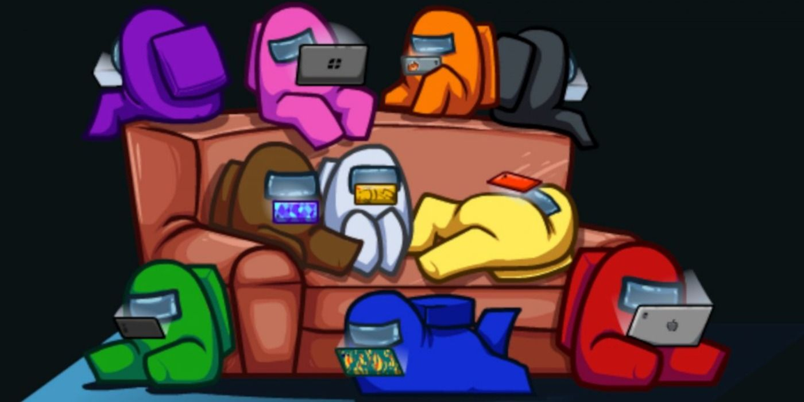

Among Us este un joc online de deducere socială multiplayer dezvoltat și publicat de studioul american de jocuri Innersloth. A fost lansat pe dispozitivele iOS și Android în iunie 2018 și pe Windows în noiembrie 2018, oferind jocuri multiplataforma între aceste platforme. Jocul a fost portat și pentru Nintendo Switch în decembrie 2020 și a planificat lansări pentru Xbox One și Xbox Seria X și Seria S în 2021. Jocul a fost inspirat din jocul de petrecere Mafia și filmul de groază science fiction The Thing și, de la lansarea primei sale hărți, The Skeld, au fost adăugate alte hărți în joc. O a patra hartă, „Dirijabilul”, va fi lansată în martie 2021.
Gameplay: Among Us este un joc multiplayer care se poate juca de la patru până la zece jucători. Până la trei jucători sunt aleși aleatoriu pentru a fi impostor în fiecare rundă. O rundă poate avea loc pe una dintre cele trei hărți: o navă spațială numită "The Skeld", o clădire a sediului central numită "MIRA HQ" sau o bază a planetei numită "Polus" O a patra hartă, "The Airship", a fost anunțată pe 10 decembrie , 2020 și este planificat pentru lansare pe 31 martie 2021.
Jocul se desfășoară într-un cadru tematic spațial, în care jucătorii au fiecare unul din cele două roluri, majoritatea fiind colegi de echipaj, iar un număr predeterminat fiind Impostori.Scopul colegilor de echipaj este să identifice impostorii, să-i elimine, și finalizați sarcini în jurul hărții; Scopul impostorilor este să saboteze și să-i omoare pe ascuns pe colegii de echipaj înainte de a-și îndeplini toate sarcinile. Jucătorii bănuiți a fi impostori pot fi eliminați printr-un vot , pe care orice jucător îl poate iniția convocând o întâlnire de urgență (cu excepția unei alerte ) sau raportând un cadavru. Colegii echipajului câștigă dacă toți impostorii sunt eliminați sau toate sarcinile sunt îndeplinite, în timp ce impostorii câștigă dacă există un număr egal de impostori și colegi de echipaj sau dacă un sabotaj critic rămâne nerezolvat. În timp ce jocul a fost lansat inițial în 2018 pentru o atenție redusă, acesta a primit un aflux masiv de popularitate în 2020 datorită multor cunoscute streamere Twitch și YouTubers care îl joacă. Jocul a primit recenzii pozitive din partea criticilor, fiind lăudat pentru joc și setare, deși a fost criticat pentru problemele sale tehnice. Ca răspuns la popularitatea jocului, Among Us 2 a fost anunțat în august 2020. Cu toate acestea, continuarea planificată a fost anulată o lună mai târziu, iar echipa și-a schimbat atenția spre îmbunătățirea jocului original. Mărfurile bazate pe joc, cum ar fi jucăriile, cămășile etc., au fost anunțate și lansate. Printre noi a inspirat, de asemenea, meme pe internet și a obținut un număr foarte mare de persoane online.
La începutul jocului, colegilor de echipaj li se atribuie „sarcini” de completat în jurul hărții sub formă de mini-jocuri, constând în lucrări de întreținere a sistemelor vitale precum repararea luminilor și descărcarea datelor de navigare. Impostorilor li se oferă o listă falsă de sarcini pentru a se amesteca cu inocent. Cu toate acestea, ei nu pot efectua efectiv nicio sarcină. Impostorii pot sabota sistemele vitale (cum ar fi aprovizionarea cu oxigen a navei), pot călători în secret în sistemele de ventilatie și pot colabora cu alți impostori pentru a ucide colegii de echipaj. Dacă un jucător moare, devin o fantomă. Fantomele pot trece prin pereți, pot privi alți jucători și pot discuta cu alte fantome. Jucătorii vii au un con limitat de viziune, dar fantomele nu au această limitare.